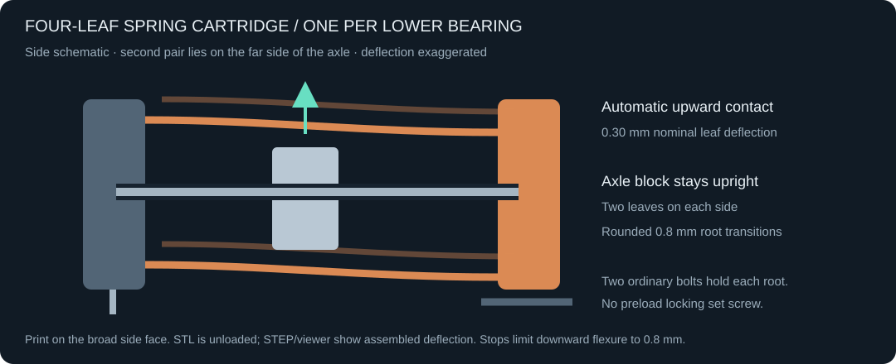

Small footprint.
Compliant by design.
An enclosed, mountable rack actuator with a tested six-bearing guide. Standard-depth NEMA17 or NEMA14 motors, configurable teeth and travel, and an exposed rear face for a motor-mounted driver. Explore the actual CadQuery assembly.
Tooth size. Stroke. Housing length.
These controls create a configuration for the CadQuery generator. The 3D viewer shows the checked module-2, 40 mm-stroke reference for the selected motor; it does not regenerate CAD in your browser.
Use the downloaded JSON with python model.py --config actuator-nema17.json --out build/nema17 --check. Housing length is the fixed case length along the travel axis, separate from stroke and the protruding output pad. Changed configurations need new geometry checks and a print-fit test.
The tested guide.
A practical enclosure.
The six 625ZZ rollers and integral spring floors retain the tested guide geometry. Four angled rollers hold the rack down and inward; two spring-loaded rollers support it from below. The broad spring floors remain part of the chassis, with 2.3 mm nominal preload. Bearing pockets retain 0.8 mm relief, axle heads 0.5 mm clearance, and the rack a square insertion end.
The toothed section now covers only the required engagement range. A longer smooth output tongue keeps every tooth inside the housing throughout the 40 mm reference stroke. The moving pad remains accessible outside the case. The 16 mm minimum rack backbone, rounded tooth-root reliefs and oversized flanks preserve the compliant-tooth principle from seveibar’s compliant spur gear ↗.
A removable lid covers the pinion, rack teeth and bearings. The lower tray has four reinforced M4 mounting slots on a flat side face, front chassis screws and a broad rear support ledge. Two posts inside the lid clamp the chassis at its existing rear recesses. The motor rear projects 4 mm beyond an oversized opening, so its controller can remain outside without imposing a guessed board size.
The core mechanism has been physically tested by the builder. The enclosure and new parameter combinations still need fit, thermal and load testing. The case is ventilated, not sealed.Build dimensions
- Motor
- Loading motor dimensions…
- Shaft fit
- Ø5.30 mm D bore · 0.15 mm wall clearance
M3×4 flat-point screw normal to flat
Tap Ø2.5 mm radial pilot M3 - Rack
- Loading rack dimensions…
- Guidance
- 6 × 625ZZ, 5 × 16 × 5 mm
46 mm station spacing
Four upper at 45°, two below - Mounting
- Four M4 side-mount slots
Mounting face stays clear of the motor driver - Envelope
- Loading case dimensions…
- Travel
- Loading drive ratio…

Resolution table
The smaller NEMA14 pinion gives 22.2% finer commanded increments: 0.439823 mm per full step and 0.027489 mm at 1/16. Select either variant above to update the full table, viewer, and downloads. Actual positioning accuracy still needs measurement.
For a 1.8° motor (200 full steps/revolution) directly driving the 18-tooth, module-2 pinion. Its 36 mm pitch diameter gives 113.097336 mm of rack travel per revolution.
Travel per command = π × 36 mm ÷ (200 × microstep factor)
| Drive setting | Commands / rev | mm / command | µm / command | Commands / mm |
|---|---|---|---|---|
| Full step | 200 | 0.565487 | 565.487 | 1.76839 |
| Half step (1/2) | 400 | 0.282743 | 282.743 | 3.53678 |
| 1/4 step | 800 | 0.141372 | 141.372 | 7.07355 |
| 1/8 step | 1,600 | 0.070686 | 70.686 | 14.14711 |
| 1/16 step | 3,200 | 0.035343 | 35.343 | 28.29421 |
These are commanded increments, not measured positioning accuracy or guaranteed physical movement per microstep. Load, driver current regulation, motor torque, printed tooth compliance and backlash affect actual motion. Verify your motor's full-step angle; a 0.9° motor halves these increments.
Service without removing the driver.
Remove and park the cover screws, then lift the lid. Withdraw the rack and pinion. Remove the upper axles and rollers to reach the motor screws, then lower the motor with its driver still attached. Remove the chassis screws and lower the tray with its captive nuts. The remaining bearing hardware is serviced afterward. The viewer and CAD checks use the same paths.
Five printed components
Chassis, rack, pinion, mounting tray and removable lid. At the default module 2, the tested chassis and matching pinion are reused; print the longer rack and both enclosure halves.
Controller stays outside
No controller-sized placeholder is used for collision checks. The tray always stays at least 4 mm ahead of the motor’s rear mounting plane during service. Electronics and connectors must lie behind that plane.
Printing, fasteners & installation
Printing
Print the tray on its outer floor and the lid roof-down. Use local supports as required for horizontal nut pockets and mounting counterbores, and clean those passages before assembly. Print the rack tooth-face down so the output pad lies on the same plane. The chassis STL is relaxed; the assembly shows its loaded shape. Preserve the original chassis print orientation and material that passed your fit test.
Enclosure hardware
4 × M3×25 socket screws with 4 × M3 hex nuts (5.5 mm across flats, 2.4 mm thick); 2 × M4×12 low-head screws (head Ø7.6 × 2.2 mm maximum) with 2 × M4 nuts (7 mm across flats, 3.2 mm thick). The nuts slide into side-access pockets. Four application-specific M4 fasteners attach the reinforced side mounting face to your design; select length for the fixture.
Assembly
Fit the captive nuts and mount the tray to the fixture while open. Seat the bearing chassis on the front supports and rear ledge; install the two M4 chassis screws. Assemble the motor, pinion and bearing hardware, then insert the rack with the motor free to turn. Check all six bearings rotate. The lid posts enter the rear chassis recesses and clamp the frame when its four M3 screws are tightened. Avoid overtightening printed clamps.
Motor & controller
Defaults are a 40 mm NEMA17 body or 34 mm NEMA14 body, with configurable depth. Verify the actual motor’s shaft, pilot and hole dimensions. The motor rear and attached driver project out of the case; leave cable and cooling space in your installation. Follow the motor/driver temperature limits. No controller envelope or electronics are included in the CAD.
Design limits
Use controller travel limits. CAD checks sample rigid geometry; they do not establish load rating, fatigue life, ingress protection or physical microstep accuracy. The tested core does not validate every tooth-module, motor-depth or stroke combination. Recheck and print-test changed configurations.
From viewer to workbench.
Editable CadQuery source, exact STEP assembly, printable meshes and the check report.